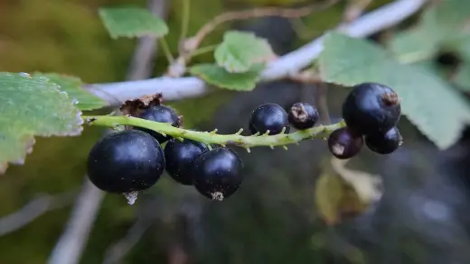

Sauces, preserves & sides · Popular in Midwest, Great Plains and Rocky Mountains
Wild black currant jam
Wild black currant jam is made with wild black currant, a favourite in Midwest, Great Plains and Rocky Mountains.

How do you make wild black currant jam?
Wild currants cooked with sugar into a tart, rich jam.
Wild ingredients
- Wild black currant (Ribes americanum / R. hudsonianum): in season July to August
Watch the recipe

Video: Lizzie Lenard on YouTube